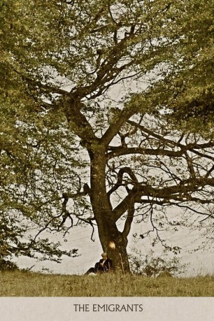

#11036 Auswanderer, Die - Emigranten
Alternativ: The Emigrants (Englischer Titel)
Auszeichnungen: für 4 Oscars nominiert 2 GoldenGlobes gewonnen
 
 IMDB-Wertung: 8.0 / 10
IMDB-Wertung: 8.0 / 10  Metascore: 0
Metascore: 0 
In the middle of the 19th century, Kristina and Karl-Oskar live in a small rural village in Smaaland (southern Sweden). They get married and try to make a living on a small spot of land. However, the small size of their land, the infertile soil, and some bad harvests make it tough. One of their children even starves to death. Thus, they decide to emigrate to the U.S. They meet a group of farmers with their families planning the emigration under the leadership of a banned priest. They sell everything and embark for the U.S. The journey on the sailing ship is long and tedious. Some of the emigrants will never reach the New World.
Jahr: 1971
Dauer: 191 Minuten
FSK: 12
Land: Schweden Studio: Schröder MediaTonspuren: DD2.0 - ,
Untertitel: Deutsch,
Auflösung: 720p (1200x720) Größe: 4515 MB
Genre: Drama, Geschichte
Regisseur: Jan Troell
Drehbuch: Bengt Forslund, Jan Troell, Vilhelm Moberg
Soundtrack: Erik Nordgren
Darsteller:
 Max von Sydow als Karl Oskar
Max von Sydow als Karl Oskar Liv Ullmann als Kristina
Liv Ullmann als Kristina Eddie Axberg als Robert
Eddie Axberg als Robert Allan Edwall als Danjel
Allan Edwall als Danjel- Monica Zetterlund als Ulrika
 Pierre Lindstedt als Arvid
Pierre Lindstedt als Arvid Hans Alfredson als Jonas Petter
Hans Alfredson als Jonas Petter- Ulla Smidje als Inga-Lena, Danjels hustru
- Åke Fridell als Aron på Nybacken
- Agneta Prytz als Fina-Kajsa
- Halvar Björk als Anders Månsson, hennes son
- Sven-Olof Bern als Nils
- Aina Alfredsson als Märta
- Eva-Lena Zetterlund als Elin, Ulrikas dotter
- Gustaf Färingborg als Prosten Brusander
- Arnold Alfredsson als Kyrkvärd
- Bror Englund als Måns Jakob
- Tom C. Fouts als Pastor Jackson
- Peter Høimark als Andre styrman
- Erik Johansson als Kapten Lorentz
- Staffan Liljander als Landberg
- Göran Lundin als Förste styrman
- Ditte Martinsson als Barn
- Lasse Martinsson als Karl Oskars och Kristinas barn
- Pelle Martinsson als Karl Oskars och Kristinas barn
- Annika Nyhammar als Barn
- Yvonne Oppstedt als Karl Oskars och Kristinas barn
- Bruno Sörwing als Kronolänsman Lönnegren
- Linn Ullmann als Karl Oskars och Kristinas barn
Datei: X:\2-Dilogie(A-F)\Auswanderer - Neue Land\Auswanderer, Die - Emigranten (1971, FSK12, 1200x720).mkv seit 23.04.2019
Festplatte: HD Collection-2(A-Z)-3(A-M)
 Alle Filme aus Gruppe '2-Dilogie(A-F)\Auswanderer - Neue Land'
Alle Filme aus Gruppe '2-Dilogie(A-F)\Auswanderer - Neue Land'